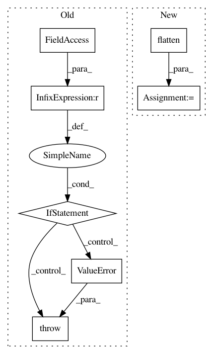

af461df627ef660d1a71b6981dedb4e4b504ba9a,txtgen/modules/connectors/connectors.py,StochasticConnector,_build,#StochasticConnector#Any#,256
Before Change
modules = ["txtgen.custom", "txtgen.core.distributions"]
sampler = get_function(self.hparams.distribution, modules)
if sampler is distributions.sample_gaussian:
if not isinstance(inputs, tuple):
raise ValueError(
"Gaussian connector requires tuple input tensors.")
if len(inputs) == 2:
input_mu, input_log_var = inputs
output = sampler(input_mu, input_log_var)
elif len(inputs) == 3:
input_mu, input_log_var, context = inputs
sample = sampler(input_mu, input_log_var)
output = tf.concat([sample, context], axis=1)
else:
raise ValueError("Gaussian connector supports either "
"(mu, logvar) or (mu, logvar, context)")
else:
raise ValueError("Unsupported distribution")
self._add_internal_trainable_variables()
self._built = True
return output
After Change
try:
nest.assert_same_structure(inputs, self._decoder_state_size)
except (ValueError, TypeError):
flat_input = nest.flatten(inputs)
output = nest.pack_sequence_as(
self._decoder_state_size, flat_input)
self._add_internal_trainable_variables()
self._built = True
In pattern: SUPERPATTERN
Frequency: 3
Non-data size: 7
Instances
Project Name: asyml/texar
Commit Name: af461df627ef660d1a71b6981dedb4e4b504ba9a
Time: 2017-09-25
Author: junxianh2@gmail.com
File Name: txtgen/modules/connectors/connectors.py
Class Name: StochasticConnector
Method Name: _build
Project Name: tensorflow/agents
Commit Name: c62215debda5bf5d89723f4112f1e3e2f063cd52
Time: 2020-04-17
Author: kokiopou@google.com
File Name: tf_agents/trajectories/time_step.py
Class Name:
Method Name: termination
Project Name: RaRe-Technologies/gensim
Commit Name: a31eab99dfbc6dcb7fe2ef149c59a30910adbbbd
Time: 2011-05-15
Author: radimrehurek@seznam.cz
File Name: src/gensim/similarities/docsim.py
Class Name: SparseMatrixSimilarity
Method Name: getSimilarities